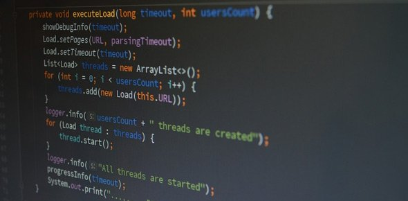

Matheus Richter

Sou estudante do curso de Ciência da Computação na PUCPR, estou no 4º período.
Já executei projetos usando Python, Java, C++, C#, Prolog, Kotlin, HTML, CSS e Javascript. Além disso tenho conhecimentos em Julia, Go, Swift, C e SQL. Também já desenvolvi aplicativos com o Android Studio.
Sempre gostei de assuntos relacionados a computação e desde que me lembro quero cursar Ciência da Computação. Agora que estou no curso quero aprender cada vez mais. Além disso sempre tive vontade de trabalhar desenvolvendo softwares.
Clique aqui para acessar meu Currículo.
Clique aqui para acessar meu LinkedIn.
Clique aqui para acessar meu GitHub.
Contato:
e-mail: ma.richter07@gmail.com
celular: (41) 99701-0637